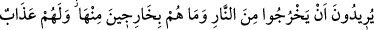
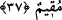

verseler “kendilerinden kabul edilmez.” Bu cümle, onlara azabın gerekliliğinin ve
onların hiçbir şekilde azaptan kurtulmalarının mümkün olmadığının temsilî olarak
anlatıldığı bir cümledir.
Bir hadiste şöyle buyurulmuştur: “Kıyamet gününde kâfir getirilir ve ona “Söyler
misin, senin dünyânın dolusu altının olsa bunları şu an kendini kurtarmak için fidye
olarak verir misin?” denildiğinde “Evet.” cevâbını verir. Bunun üzerine ona:
“Senden bundan daha kolayı istendi.” denir.”[308] Yani senden bu kadar fidyeden daha
kolay yerine getirebileceğin şey, yani Allah Teâlâ’ya şirk koşmaktan vazgeçmen ve
kelime-i şehâdet getirmen istendi, denir.
“Onlar için acı” acısı kalplerine ulaşan “bir azap vardır.”
37- Ateşten çıkmak isterler, fakat onlar oradan çıkacak değillerdir. Onlar için
devamlı bir azap vardır.
Sanki “Cehennemliklerin durumları nasıl, onlar ne yapıyor?” diye bir soru sorulmuş
ve cevap olarak şöyle denilmiştir: “Ateşten çıkmak isterler.” Bu ifâdenin çeşitli
îzahları vardır:
Birincisi: Onlar böyle yapmayı kasdederek çıkış arıyorlar. Cehennemin alevi onları
bürüyüp yukarıya kaldırıyor. İşte bu esnada çıkmak istiyorlar ama heyhat! Artık
kurtulma zamanı geçmiştir.
İkincisi: Onlar, ateşin kuvveti ve onları havaya kaldırması sebebiyle neredeyse
cehennemden çıkacak gibi oluyorlar.
Üçüncüsü: Onlar cehennemden çıkmayı temennî ediyorlar ve kalplerinden bunu
istiyorlar.
Bunu isterler “fakat onlar oradan çıkacak değillerdir.” Çünkü onlar ne zaman buna
teşebbüs etseler gerisin geri oraya döndürülmektedirler.
“Onlar için devamlı” dâimî hiç bitmeyecek “bir azap vardır.” Cehennemin şiddeti
beyan edildikten sonra burada da azâbın sonu olmadığı açıklanmaktadır.
Bir hadiste şöyle buyurulmuştur: “Cennetliklere: “Ey cennet ehli, burada ebedî
kalacaksınız, artık ölüm yok.” denir. Cehennemliklere de: “ey cehennem ehli, siz de
orada ebedî kalacaksınız, artık ölüm yok.” denir.”[309] Yani, mü’minlere ebedî cennet,
kâfirlere ebedî cehennemin olduğu ve artık ölüm olmadığı söylenir.
Rivâyet edildiğine göre bu iki söz, ölüm bir koç şeklinde karşılarına getirilip cennet
ve cehennem arasında boğazlandıktan sonra söylenir. Ölümün bu şekilde temsil
edilmesinden maksat, onların bizzat gözleriyle müşahade edip de artık ölüm
olmayacağını anlamaları ve sonuçta cennettekilerin sevincinin, cehennemdekilerin de